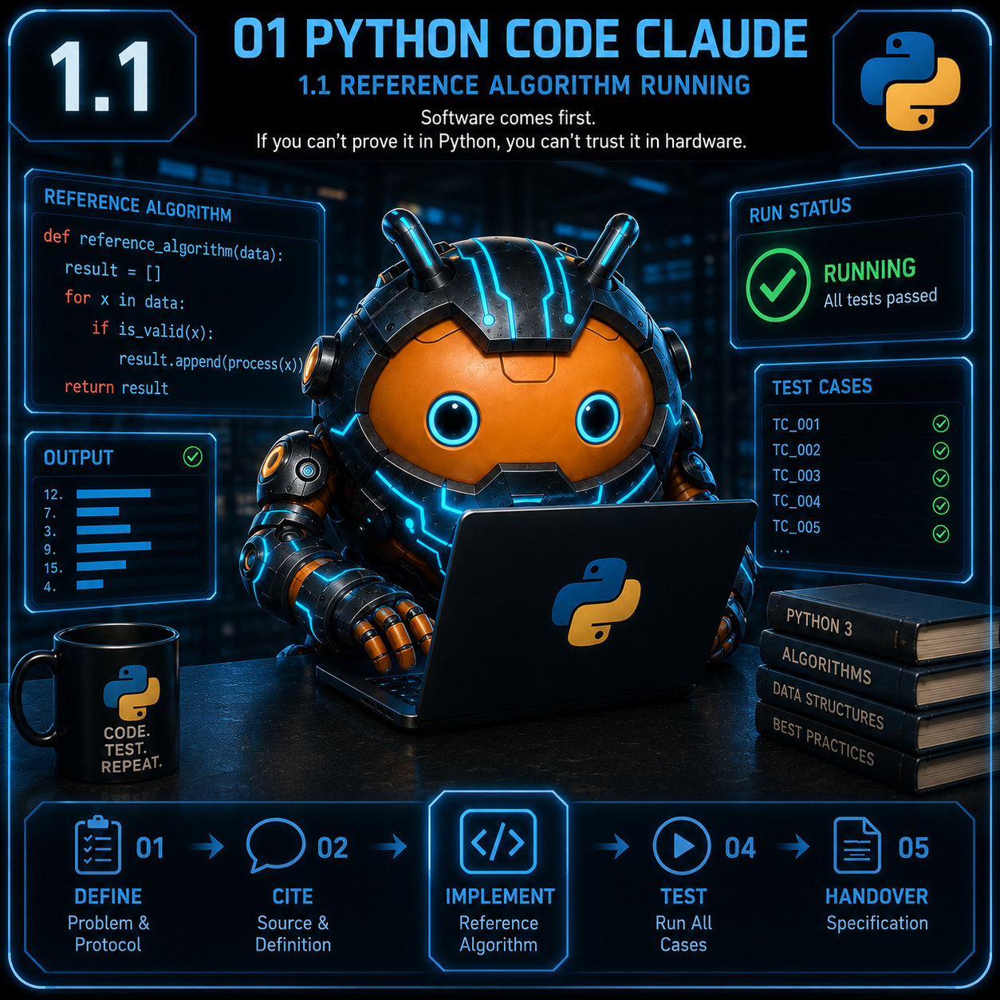
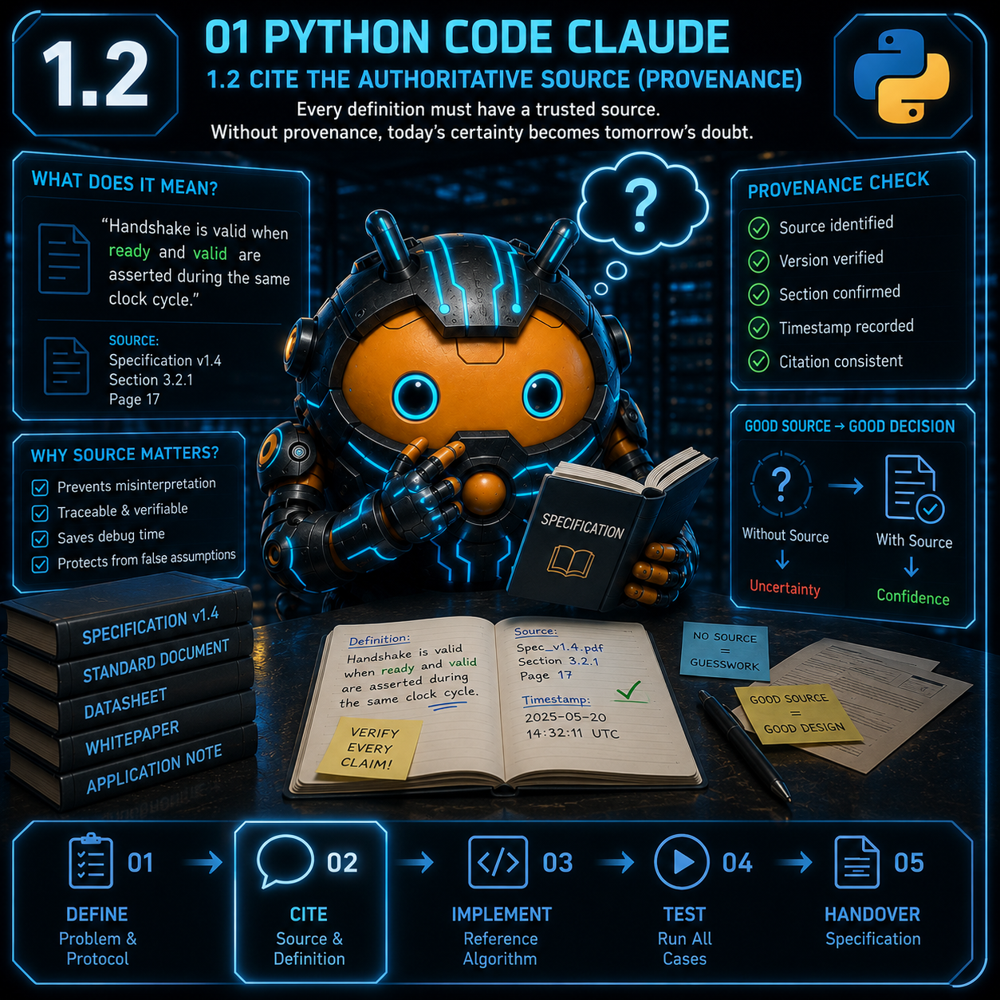
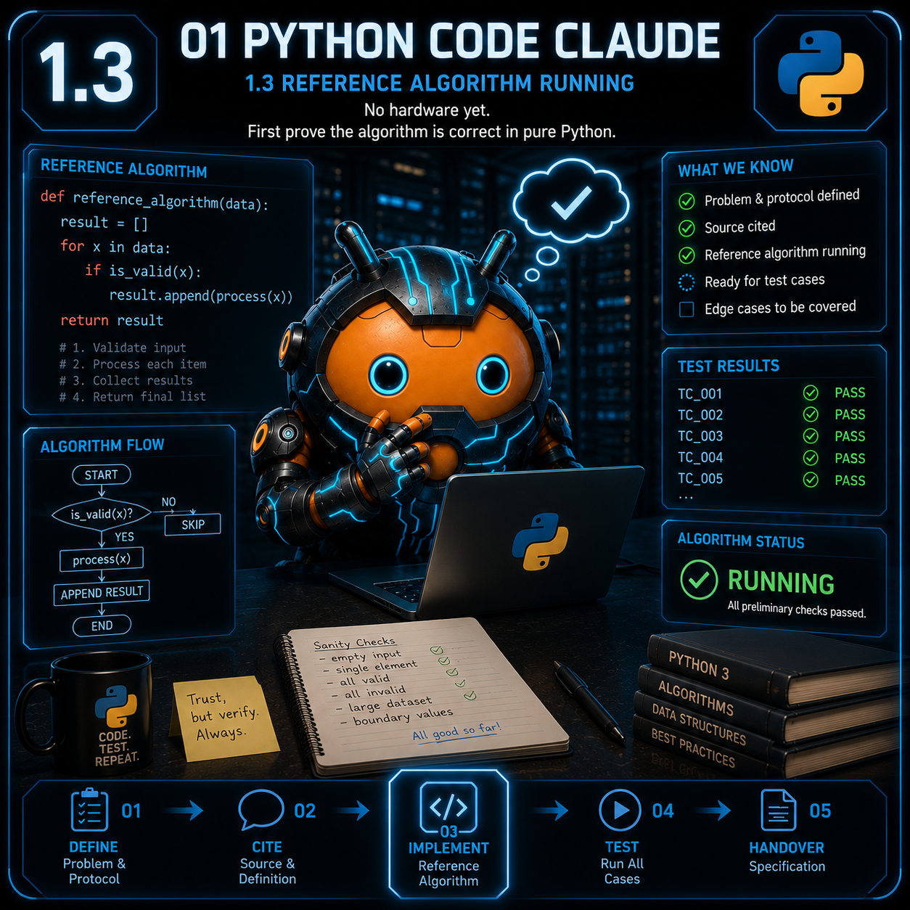
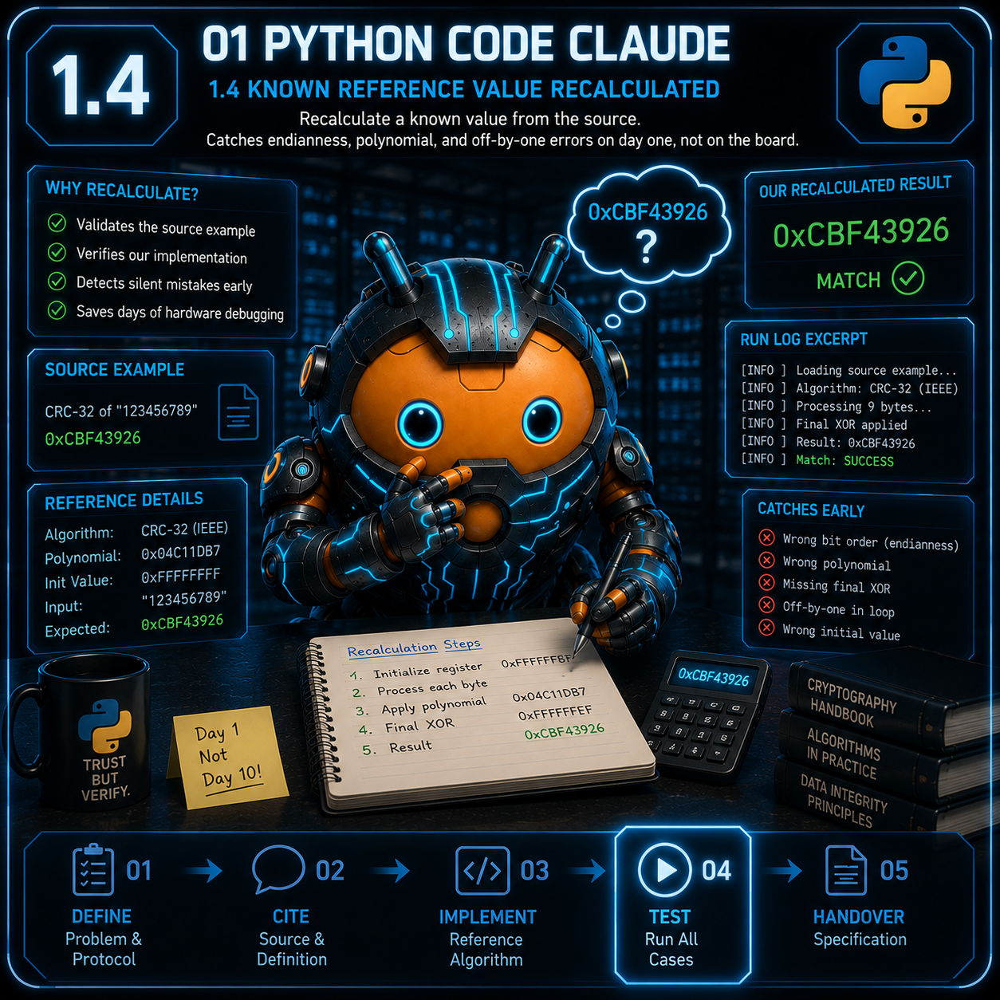
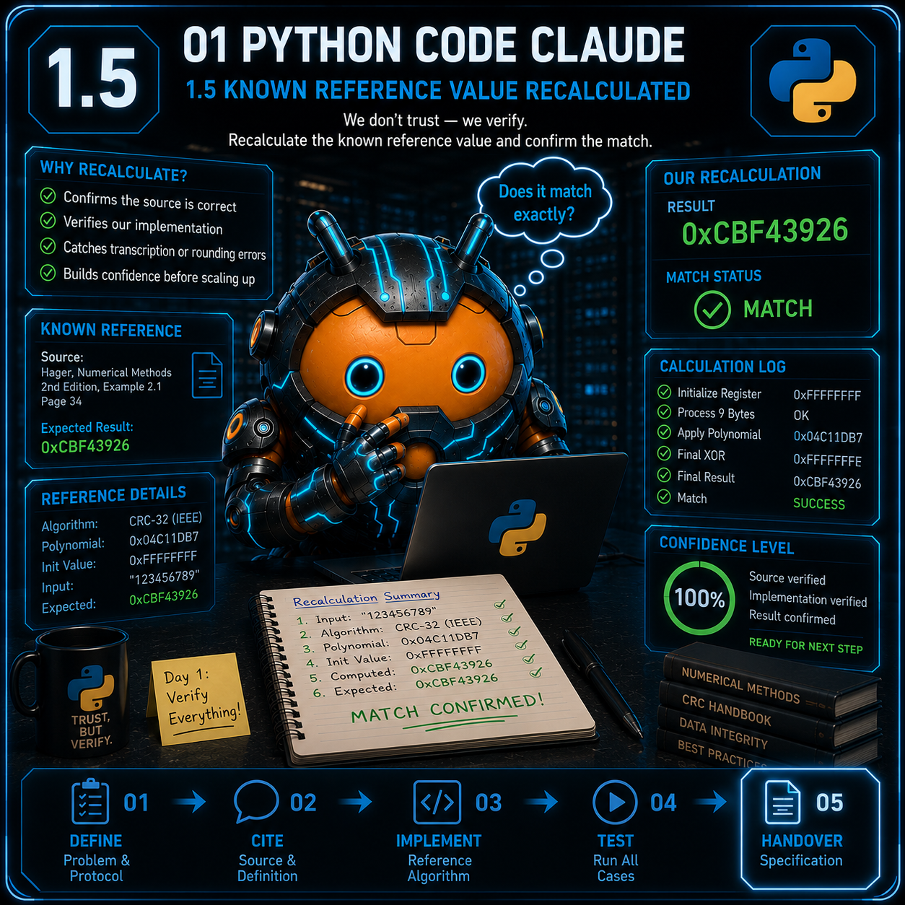

01 Python Code
Unterschritte 1.1 - 1.5
← Zurueck zur Uebersicht

1.1 Problem & Protokoll definiert
Pruefaufgabe
Problem & Protokoll definiert (reset/start/valid, Parameter)
Beweis-Artefakt
SPEC_<block>_v1.md
Die Spec VOR der ersten Codezeile - Off-by-one und falsche Vorbedingungen entstehen fast immer aus unscharfem Protokoll, nicht aus schlechtem Code.

1.2 Definition zitiert (Provenance)
Pruefaufgabe
Definition aus maßgeblicher Quelle zitiert (Provenance)
Beweis-Artefakt
Quellzitat in der Spec
Jede Definition trägt ihre Quelle (Standard/Datenblatt). Ohne Zitat ist die "Wahrheit" erfunden - ein späterer Zweifel kostet Tage, ein Zitat Minuten.

1.3 Referenz-Algorithmus läuft
Pruefaufgabe
Referenz-Algorithmus läuft
Beweis-Artefakt
ref_<block>.py Exit 0
Reine Software zuerst, lesbar schlägt clever: was du nicht in purem Python zeigen kannst, ist keine Idee, sondern eine Hoffnung.

1.4 Referenzwert nachgerechnet
Pruefaufgabe
Bekannter Referenzwert nachgerechnet
Beweis-Artefakt
Testzeile im Run-Log
Einen bekannten Wert aus der Quelle nachrechnen (z. B. CRC32("123456789")=0xCBF43926) - fängt Endianness- und Polynomfehler am Tag 1 statt am Brett.

1.5 Offene Kanten & Übergabe
Pruefaufgabe
Offene Kanten explizit als OFFEN gelistet + Übergabe
Beweis-Artefakt
HANDOVER-Zeile SPEC
Undefiniertes heißt OFFEN, wird nie geraten. Eine ehrliche Lücke ist billig; eine stillschweigende Annahme wandert bis in den Bitstream.